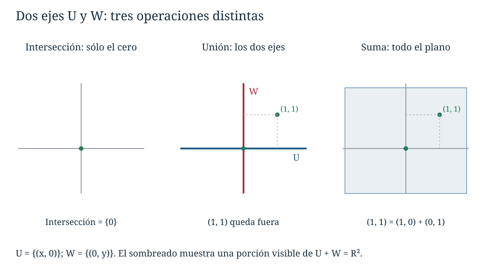
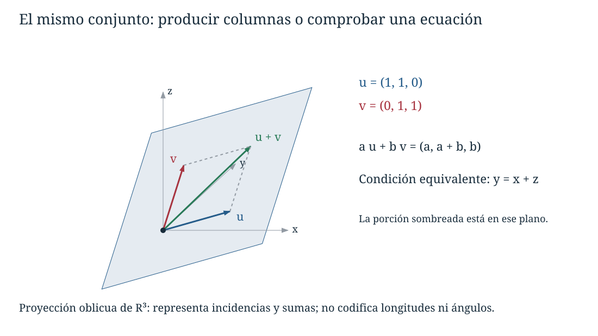
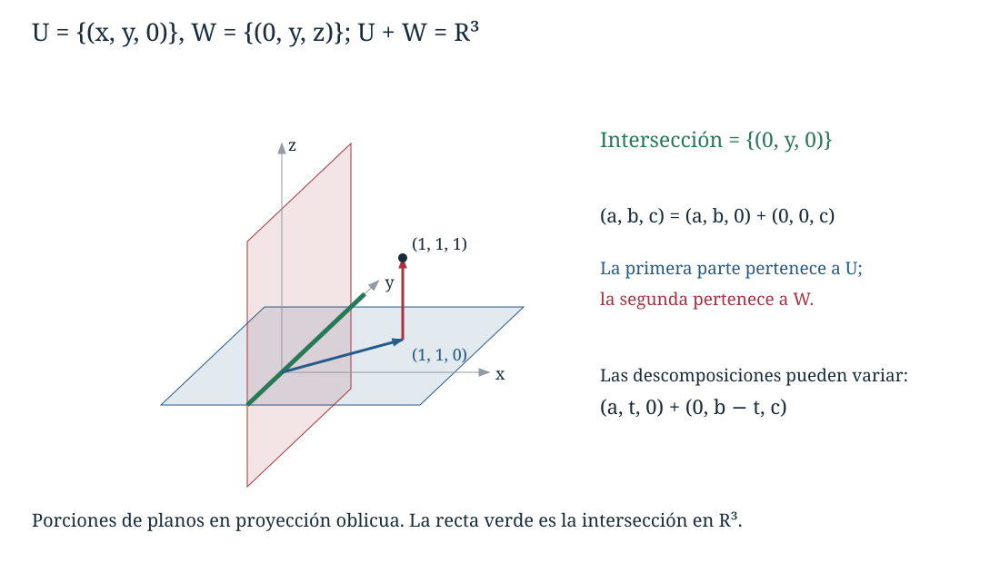

Capítulo 5. Subespacios y generación
Álgebra para matemáticos · Tomo II
← Capítulo 4 · Índice del tomo II · Obra completa · Capítulo 6 →
Dos datos \(a,b\) se combinan para producir la columna \((a,a+b,b)\). Podemos describir todos los resultados posibles dejando variar los dos datos, pero también podemos reconocerlos mediante una condición: si la salida es \((x,y,z)\), necesariamente \(y=x+z\). La condición es suficiente, pues cualquier columna que la cumpla se obtiene eligiendo \(a=x\) y \(b=z\). Tenemos así dos descripciones del mismo conjunto,
\[ W=\{(a,a+b,b):a,b\in\mathbb F\} =\{(x,y,z)\in\mathbb F^3:y=x+z\}. \]
La primera descripción explica cómo construir sus elementos; la segunda permite comprobar si una columna pertenece. Si sumamos dos salidas, sumamos sus datos de entrada; si multiplicamos una salida por un escalar, multiplicamos ambos datos por él. En los dos casos obtenemos otra salida posible. En C04 verificamos esta propiedad en distintos espacios repitiendo parte de sus axiomas. La estructura del espacio ambiente permite abreviar esas verificaciones y, después, construir sistemáticamente todos los vectores que ciertas condiciones o ciertos datos nos obligan a admitir.
Durante el capítulo, \(V\) será un espacio vectorial sobre un cuerpo conmutativo \(\mathbb F\). Las representaciones geométricas se harán sobre \(\mathbb R\); los enunciados sobre \(\mathbb F\) no presuponen orden, infinitud ni característica cero.
5.1. Espacios dentro de un espacio
Definición 5.1 (subespacio). Un subconjunto \(U\subseteq V\) es un subespacio vectorial de \(V\) si las operaciones de \(V\), restringidas a \(U\), hacen de \(U\) un espacio vectorial sobre el mismo cuerpo \(\mathbb F\).
La restricción conserva el significado de sumar y de multiplicar por un escalar. Esto distingue un subespacio de un subconjunto al que se han dado operaciones nuevas. La recta \(x+y=1\) de C04 podía convertirse en un espacio al elegir un origen y cambiar sus operaciones; con la suma y los múltiplos ordinarios del plano seguía sin ser un subespacio.
Las leyes universales, como asociatividad o distributividad, ya valen para todos los vectores de \(V\), y por ello para los de \(U\). Lo que debemos comprobar es que las operaciones permanezcan en \(U\) y que los elementos cuya existencia exigen los axiomas se encuentren allí.
Teorema 5.1 (criterio de subespacio). Un subconjunto \(U\subseteq V\) es un subespacio si y sólo si contiene \(0_V\), es cerrado bajo suma y es cerrado bajo multiplicación por cada escalar de \(\mathbb F\).
Demostración. Supongamos primero que \(U\) es un subespacio y llamemos \(e\) a su cero. Para cualquier \(u\in U\), la igualdad \(u+e=u=u+0_V\) se cumple en \(V\), así que la cancelación de C04 da \(e=0_V\). Por tanto \(0_V\in U\). Los cierres son necesarios porque la suma y la multiplicación escalar deben ser operaciones internas de \(U\).
Recíprocamente, los cierres permiten restringir ambas operaciones. El vector \(0_V\) pertenece a \(U\) y sigue siendo neutro. Si \(u\in U\), el cierre escalar proporciona \((-1)u=-u\in U\), y ese vector es su opuesto también dentro de \(U\). Conmutatividad, asociatividad, acción del uno, compatibilidad y las dos distributividades se conservan porque cada igualdad es la misma que en \(V\). Se satisfacen así los ocho axiomas de C04. \(\square\)
Puede sustituirse la condición \(0_V\in U\) por \(U\ne\varnothing\) si se mantienen los dos cierres: elegido \(u\in U\), multiplicar por cero obliga a incluir \(0_V\). La no vaciedad no debe desaparecer, pues el conjunto vacío satisface vacíamente las afirmaciones de cierre y carece de cero.
Corolario 5.1 (criterio mediante combinaciones). Un subconjunto no vacío \(U\) es un subespacio de \(V\) si y sólo si \(au+bv\in U\) para todos \(u,v\in U\) y \(a,b\in\mathbb F\).
Demostración. Un subespacio conserva sumas y múltiplos y, por tanto, esas combinaciones. En la otra dirección, escoger \(a=b=0\) proporciona el cero; escoger \(a=b=1\) proporciona el cierre aditivo; escoger \(b=0\) proporciona el cierre escalar. El teorema 5.1 se aplica. \(\square\)
Los conjuntos \(\{0_V\}\) y \(V\) son siempre subespacios. Para un ejemplo menos extremo, las matrices superiores triangulares de tamaño \(n\times n\) forman un subespacio de \(M_{n,n}(\mathbb F)\): en cada entrada debajo de la diagonal, \(aA+bB\) tiene valor \(a\cdot0+b\cdot0=0\). La matriz cero está incluida. El argumento comprueba una condición sobre entradas y evita repetir las leyes del producto escalar.
Contener cero no basta. Las matrices singulares \(2\times2\) contienen la matriz cero y conservan múltiplos, pero \(\begin{bmatrix}1&0\\0&0\end{bmatrix}\) y \(\begin{bmatrix}0&0\\0&1\end{bmatrix}\) son singulares y su suma es la identidad. Tampoco basta conservar sumas: \(\mathbb Z\subset\mathbb R\) conserva la suma y contiene cero, pero \(\frac12\cdot1\) no es entero. El cuerpo de escalares participa en el criterio.
5.2. Describir por condiciones
Una condición homogénea explica con frecuencia el cierre. Para el conjunto de la apertura, si \(u=(x,y,z)\) y \(u'=(x',y',z')\) cumplen \(y=x+z\) y \(y'=x'+z'\), entonces \(ay+by'=(ax+bx')+(az+bz')\). La combinación \(au+bu'\) vuelve a satisfacer la condición y el cero la satisface.
Más generalmente, sea \(A\in M_{m,n}(\mathbb F)\). El conjunto de soluciones de \(Ax=0\) es un subespacio de \(\mathbb F^n\), pues contiene cero y \(A(au+bv)=aAu+bAv=0\) para dos soluciones \(u,v\). Este cálculo, demostrado en C03 y utilizado en C04, es ahora una aplicación del criterio. No hace falta resolver el sistema para saber que su conjunto de soluciones tiene estructura vectorial.
Una condición sobre funciones se trata del mismo modo, evaluando donde corresponda. En el espacio \(\mathbb F^X\), si \(x_0\in X\) está fijado, las funciones que cumplen \(f(x_0)=0\) forman un subespacio: \((af+bg)(x_0)=af(x_0)+bg(x_0)=0\). Si \(x_0,x_1\in X\), la condición \(f(x_0)=f(x_1)\) también se conserva, porque la igualdad de valores se conserva al formar la misma combinación en ambos lados. No estamos suponiendo continuidad ni ninguna representación gráfica de las funciones.
En \(\mathbb F[t]_{\le3}\), los polinomios cuyo coeficiente de \(t\) es cero forman un subespacio: cada uno tiene la forma \(a+bt^2+ct^3\). La condición se refiere a coeficientes formales, con el significado fijado en C04. Por contraste, los polinomios de grado exactamente tres, incluso añadiendo el cero, pueden perder su grado al sumarse; por ejemplo, \((t^3+t)+(-t^3)=t\).
La homogeneidad debe verificarse en la condición concreta. El conjunto \(xy=0\) de \(\mathbb R^2\) contiene cero y conserva múltiplos, pero sumar \((1,0)\) y \((0,1)\) sale de él. Una ecuación con miembro derecho cero puede ser no lineal y fallar el cierre.
5.3. Intersecar condiciones y reunir conjuntos
Si imponemos dos condiciones simultáneamente, tomamos la intersección de sus conjuntos de soluciones. Las mismas operaciones que conservan cada condición conservan las dos.
Proposición 5.1 (intersecciones de subespacios). La intersección de cualquier familia \((U_i)_{i\in I}\) de subespacios de \(V\) es un subespacio. Cuando \(I=\varnothing\), la intersección se entiende relativa a \(V\) y vale \(V\).
Demostración. Para una familia no vacía, cada \(U_i\) contiene \(0_V\), de modo que el cero pertenece a la intersección. Si \(u,v\) pertenecen a ella, pertenecen a cada \(U_i\). Por su cierre, \(au+bv\) también pertenece a cada \(U_i\), y por tanto a la intersección. El corolario 5.1 prueba que es un subespacio. Para \(I=\varnothing\), la condición «pertenecer a todos los \(U_i\)» no impone ninguna restricción a los elementos de \(V\); la intersección es \(V\), que ya es un subespacio. \(\square\)
Por ejemplo, en \(\mathbb R^3\) las condiciones \(y=x+z\) y \(x=z\) definen dos planos por el origen. Su intersección está formada por \((t,2t,t)\): sustituir \(x=z=t\) determina \(y\). Todos sus elementos cumplen ambas condiciones, y cualquier vector que cumpla ambas aparece así.
La unión responde a otra pregunta: basta cumplir una condición o la otra. En el plano, los dos ejes son subespacios, pero su unión no contiene \((1,1)\), aunque contenga sus sumandos \((1,0)\) y \((0,1)\). Para conservar ambas direcciones y las operaciones tendremos que añadir más vectores que los que aparecen en la unión.

El defecto puede describirse exactamente para dos subespacios.
Proposición 5.2 (unión de dos subespacios). La unión \(U\cup W\) de dos subespacios es un subespacio si y sólo si \(U\subseteq W\) o \(W\subseteq U\).
Demostración. Si uno está contenido en el otro, la unión es el mayor y ya es un subespacio. Supongamos que ninguno contiene al otro. Existen entonces \(u\in U\setminus W\) y \(w\in W\setminus U\). Si \(u+w\) perteneciera a \(U\), restar \(u\) dentro de \(U\) daría \(w\in U\), contradicción. Si perteneciera a \(W\), restar \(w\) daría \(u\in W\), también contradicción. Por tanto \(u+w\) no pertenece a la unión, aunque ambos sumandos sí pertenezcan. Falla el cierre aditivo. \(\square\)
La afirmación se refiere a dos subespacios. Una familia de más subespacios puede comportarse de otra manera, especialmente sobre un cuerpo finito; los ejercicios permitirán comprobar esa frontera.
5.4. El subespacio que unos vectores obligan a construir
Volvamos a la salida \((a,a+b,b)\). Puede escribirse como \(a(1,1,0)+b(0,1,1)\). Dos vectores fijos bastan para producir todos los resultados, usando sólo suma y multiplicación escalar. Cualquier subespacio que contenga esos dos vectores debe contener, por sus cierres, todas esas combinaciones.
Definición 5.2 (subespacio generado). Para un subconjunto \(S\subseteq V\), escribimos \(\operatorname{span}_{\mathbb F}(S)\) para el conjunto de todas las combinaciones lineales finitas de elementos de \(S\):
\[ \operatorname{span}_{\mathbb F}(S) =\left\{\sum_{j=1}^r a_js_j: r\in\mathbb N_0,\ a_j\in\mathbb F,\ s_j\in S\right\}. \]
La suma con \(r=0\) es \(0_V\). Si el cuerpo está claro, escribimos \(\operatorname{span}(S)\). Decimos que \(S\) genera \(U\) si \(\operatorname{span}(S)=U\). Para una lista finita abreviamos \(\operatorname{span}\{v_1,\ldots,v_r\}\) como \(\operatorname{span}(v_1,\ldots,v_r)\).
Esta definición incluye \(S=\varnothing\): su única combinación es la suma vacía y \(\operatorname{span}(\varnothing)=\{0_V\}\). Si \(S\) es infinito, cada combinación sigue utilizando sólo finitos elementos. La definición no autoriza una suma infinita ni una operación de límite.
Teorema 5.2 (carácter mínimo de la generación). \(\operatorname{span}(S)\) es el menor subespacio de \(V\) que contiene a \(S\): es un subespacio, contiene a \(S\) y está contenido en todo subespacio que contenga a \(S\). Equivalentemente,
\[ \operatorname{span}(S) =\bigcap_{\substack{U\text{ subespacio de }V\\S\subseteq U}}U. \]
Demostración. La suma vacía garantiza que el conjunto de combinaciones no sea vacío. Si \(x=\sum_{j=1}^r a_js_j\) y \(y=\sum_{k=1}^q b_kt_k\), entonces, para escalares \(c,d\),
\[ cx+dy=\sum_{j=1}^r(ca_j)s_j+\sum_{k=1}^q(db_k)t_k. \]
La expresión utiliza a lo sumo \(r+q\) elementos de \(S\) y es otra combinación finita. Por el criterio de subespacio, \(\operatorname{span}(S)\) es un subespacio. Cada \(s\in S\) pertenece porque \(s=1s\).
Si \(U\) contiene a \(S\) y es un subespacio, contiene cada múltiplo \(a_js_j\) y toda suma finita de ellos, incluido el cero. Por tanto contiene \(\operatorname{span}(S)\). La familia de la intersección no es vacía, pues incluye a \(V\). Cada uno de sus miembros contiene \(\operatorname{span}(S)\), y entre sus miembros está el propio \(\operatorname{span}(S)\); estas dos inclusiones prueban la igualdad. \(\square\)
«Menor» significa contenido en cualquier otro subespacio con la propiedad. La afirmación compara inclusiones: toda solución posible de la exigencia de cierre debe admitir las combinaciones que acabamos de construir.
En el ejemplo de la apertura, \(W=\operatorname{span}((1,1,0),(0,1,1))\). Si buscamos si \((2,1,-1)\) pertenece, basta resolver \(a=2\), \(a+b=1\), \(b=-1\), y los datos son compatibles. La columna es \(2(1,1,0)-(0,1,1)\). En cambio, \((2,0,-1)\) no pertenece: sus componentes incumplen \(y=x+z\) y los tres requisitos para \(a,b\) serían incompatibles.

La definición es igualmente concreta en otros espacios. Los polinomios \(1,t,\ldots,t^n\) generan \(\mathbb F[t]_{\le n}\) porque escribir un polinomio por sus coeficientes es escribir esa combinación. Todos los monomios \(1,t,t^2,\ldots\) generan \(\mathbb F[t]\), con una combinación finita distinta para cada polinomio. Las matrices \(E_{ij}\), definidas por tener un uno en la entrada \((i,j)\) y cero en las restantes, generan \(M_{m,n}(\mathbb F)\): cada matriz satisface \(A=\sum_{i=1}^m\sum_{j=1}^n A_{ij}E_{ij}\).
En el espacio de sucesiones, las sucesiones \(e_k\) que valen uno en la posición \(k\) y cero en las demás generan exactamente las sucesiones de soporte finito. Cada combinación finita sólo puede ser no nula en las posiciones usadas, y cualquier sucesión de soporte finito se expresa sumando sus valores por los \(e_k\) correspondientes. La sucesión constante uno no pertenece a ese generado, porque nunca deja de ser no nula.
5.5. Comparar descripciones y cambiar generadores
Para demostrar que dos conjuntos generan lo mismo no hace falta comparar una por una todas sus combinaciones. Basta comprobar que los datos de cada uno pueden construirse a partir del otro.
Proposición 5.3 (inclusión y sustitución de generadores). Para \(S,T\subseteq V\) se cumplen:
- Si \(S\subseteq T\), entonces \(\operatorname{span}(S)\subseteq\operatorname{span}(T)\).
- \(\operatorname{span}(\operatorname{span}(S))=\operatorname{span}(S)\).
- \(\operatorname{span}(S)\subseteq\operatorname{span}(T)\) si y sólo si \(S\subseteq\operatorname{span}(T)\).
Por tanto los generados son iguales si y sólo si cada elemento de \(S\) pertenece al generado de \(T\) y cada elemento de \(T\) pertenece al generado de \(S\).
Demostración. Para la primera afirmación, una combinación de elementos de \(S\) también es una combinación de elementos de \(T\). Para la segunda, \(\operatorname{span}(S)\) ya es un subespacio: toda combinación de sus elementos permanece en él, y cada uno de sus elementos es una combinación de longitud uno.
Si hay inclusión de los generados, \(S\subseteq\operatorname{span}(S)\) da la inclusión requerida para \(S\). Recíprocamente, si \(S\subseteq\operatorname{span}(T)\), este último es un subespacio que contiene a \(S\), por lo que el carácter mínimo obliga a contener \(\operatorname{span}(S)\). Aplicar el resultado en ambas direcciones prueba la conclusión sobre igualdad. \(\square\)
Si \(w=u-v\), añadir \(w\) a la lista \(u,v\) no modifica el generado: cualquier combinación de \(u,v,w\) puede reescribirse como \(au+bv+cw=(a+c)u+(b-c)v\). La nueva lista permite representar los mismos vectores de más maneras. Por ejemplo, \(u=1u+0v+0w=0u+1v+1w\). La generación asegura que una representación existe; por sí sola no asegura que sea única.
Las operaciones reversibles sobre una lista también conservan su generado. Sustituir \(v_j\) por \(v_j+cv_i\), con \(i\ne j\), conserva todos los vectores anteriores porque recuperamos \(v_j\) restando \(cv_i\); en la otra dirección, el vector nuevo era una combinación de los anteriores. Permutar la lista o multiplicar uno de sus miembros por un escalar no nulo tiene la misma propiedad. Son las operaciones que ya conocemos en las filas de una matriz, reinterpretadas como cambios de una lista de vectores.
Hay que respetar qué lista se está cambiando. Las operaciones por filas conservan el subespacio generado por las filas, consideradas vectores de \(\mathbb F^n\). No conservan necesariamente el generado por las columnas como subconjunto del espacio de salida. Por ejemplo, \(A=\begin{bmatrix}1&0\\1&0\end{bmatrix}\) se reduce por una operación de filas a \(R=\begin{bmatrix}1&0\\0&0\end{bmatrix}\). Las columnas de \(A\) generan la recta de \((1,1)\); las de \(R\), la de \((1,0)\). En cambio, aplicar operaciones de columnas a una matriz sí cambia reversiblemente la lista de sus columnas y conserva su generado.
5.6. Pasar de ecuaciones a generadores y volver
Para construir generadores de las soluciones de un sistema homogéneo podemos usar la parametrización de C01–C02. En \(\mathbb F^4\), consideremos
\[ x_1+x_2-x_3=0,\qquad x_2+x_4=0. \]
Tomando \(x_3=s\) y \(x_4=t\), obtenemos \(x_2=-t\) y \(x_1=s+t\). Por tanto el conjunto de soluciones es
\[ H=\{(s+t,-t,s,t):s,t\in\mathbb F\} =\operatorname{span}((1,0,1,0),(1,-1,0,1)). \]
La igualdad contiene dos comprobaciones: todo vector de la forma indicada satisface las ecuaciones y toda solución queda determinada por sus valores de \(x_3,x_4\) en esa forma. Al separar los coeficientes de cada parámetro se obtienen generadores. Si no hay variables libres, la única solución es cero y sirve la lista vacía.
En la dirección contraria, supongamos que los generadores son las columnas de una matriz \(G\). Pertenecer a su generado significa que existe una columna de coeficientes \(c\) que satisface \(Gc=x\). Si reducimos \(G\) por filas y registramos las mismas operaciones mediante una matriz invertible \(P\), como en C03, obtenemos el sistema equivalente \((PG)c=Px\). Cada fila cero de \(PG\) obliga a que la correspondiente entrada de \(Px\) sea cero. Son condiciones homogéneas sobre \(x\).
Esas condiciones también son suficientes: en una forma escalonada, las filas no nulas tienen pivotes, y una vez satisfechas las filas cero podemos fijar las variables libres de \(c\) y resolver las pivotales por sustitución hacia atrás. Por eso las condiciones de las filas cero describen exactamente el generado de las columnas originales de \(G\). Si no hay filas cero, no hay condiciones adicionales y cualquier \(x\) del tamaño indicado es admisible.
Para los generadores \((1,1,0)\) y \((0,1,1)\), el sistema es \(c_1=x\), \(c_1+c_2=y\), \(c_2=z\). Restar la primera ecuación de la segunda y después restar la tercera produce la condición \(0=y-x-z\). Recuperamos la ecuación del plano inicial sin introducir determinantes ni una teoría de dimensión.
Los polinomios se tratan comparando coeficientes. Si \(p=1+t\) y \(q=t+t^2\) sobre \(\mathbb R\), la pertenencia de \(r=a+bt+ct^2\) a \(\operatorname{span}(p,q)\) exige
\[ r=\alpha p+\beta q =\alpha+(\alpha+\beta)t+\beta t^2. \]
Se obtiene \(\alpha=a\), \(\beta=c\) y la condición \(b=a+c\). El generado es un conjunto de polinomios, aunque el cálculo pueda organizarse mediante sus columnas de coeficientes. Sobre un cuerpo finito seguimos comparando coeficientes formales, sin reemplazar esa condición por coincidencia de valores en todos los escalares.
5.7. La suma de subespacios
Los dos ejes del plano no conservaban la suma al tomar su unión. Si exigimos un subespacio que contenga ambos, estamos obligados a incluir todas las sumas de un vector de cada eje, y con ellas obtenemos el plano entero.
Definición 5.3 (suma de subespacios). Para subespacios \(U,W\subseteq V\), su suma es \(U+W=\{u+w:u\in U,\ w\in W\}\). Para una lista finita \(U_1,\ldots,U_r\) se define de igual modo el conjunto de todas las sumas \(u_1+\cdots+u_r\) con \(u_j\in U_j\). La suma de una lista vacía de subespacios es \(\{0_V\}\).
Proposición 5.4 (suma y generación). \(U+W\) es el menor subespacio que contiene a \(U\) y a \(W\). En particular,
\[ U+W=\operatorname{span}(U\cup W),\qquad \operatorname{span}(S)+\operatorname{span}(T)=\operatorname{span}(S\cup T). \]
Demostración. El cero pertenece a \(U+W\) como \(0+0\). Si \(x=u_1+w_1\) y \(y=u_2+w_2\), entonces \(ax+by=(au_1+bu_2)+(aw_1+bw_2)\), con el primer paréntesis en \(U\) y el segundo en \(W\). Es, por tanto, un subespacio. Contiene a \(U\) porque \(u=u+0\), y a \(W\) porque \(w=0+w\). Cualquier subespacio que contenga a ambos debe contener cada \(u+w\), lo que demuestra el carácter mínimo y la primera igualdad.
Para la segunda, \(\operatorname{span}(S\cup T)\) contiene a \(S\) y a \(T\), y por minimalidad contiene sus dos generados y su suma. A la inversa, esa suma es un subespacio que contiene a \(S\cup T\), de modo que contiene su generado. Las dos inclusiones dan la igualdad. \(\square\)
Por la asociatividad y conmutatividad de la suma vectorial, \(U+W=W+U\) y \((U+W)+Z=U+(W+Z)\). Además \(U+U=U\) y \(U+\{0_V\}=U\). Por ejemplo, \(U+U\subseteq U\) por cierre, mientras que \(u=u+0\) da la inclusión contraria. No se suman tamaños ni se cuentan elementos en estas identidades.
La suma admite una descripción simple cuando hay generadores: se reúnen las listas. La intersección puede requerir resolver un sistema nuevo. Si \(U\) está generado por las columnas de \(G\) y \(W\) por las de \(K\), un vector de la intersección tiene dos representaciones que deben coincidir: \(Ga=Kb\). Resolver \([G\ -K]\begin{bmatrix}a\\b\end{bmatrix}=0\) y sustituir los parámetros en \(Ga\) produce generadores de \(U\cap W\). Los parámetros pertenecen a las representaciones; los generadores resultantes deben ser vectores del espacio ambiente.
Para ver la diferencia, en \(\mathbb R^3\) sean \(U=\{(x,y,0)\}\) y \(W=\{(0,y,z)\}\). La intersección consta de \((0,y,0)\) y la suma es todo \(\mathbb R^3\), pues \((x,y,z)=(x,y,0)+(0,0,z)\). Una descomposición en suma no tiene por qué ser única: \((0,1,0)=(0,1,0)+(0,0,0)=(0,0,0)+(0,1,0)\). La coincidencia de las dos partes en la intersección permite esa ambigüedad.

Para una familia infinita \((U_i)_{i\in I}\), definimos su suma como \(\operatorname{span}(\bigcup_{i\in I}U_i)\). Cada vector es una suma finita de elementos de algunos de los subespacios, aunque la familia completa sea infinita. Agrupar términos del mismo subespacio no cambia esa finitud. La expresión no prescribe sumar un vector de cada miembro de una familia infinita.
5.8. Traslaciones y condiciones no homogéneas
Definición 5.4 (subespacio afín). Un subconjunto de \(V\) de la forma \(p+U=\{p+u:u\in U\}\), donde \(U\) es un subespacio y \(p\in V\), se llama subespacio afín. El conjunto \(U\) se llama su espacio de direcciones. Esta definición exige que el conjunto sea no vacío.
El adjetivo distingue la traslación de la estructura lineal con origen fijo. En \(\mathbb R^2\), la recta \(x+y=1\) es \((1,0)+\operatorname{span}((-1,1))\). No es un subespacio lineal con las operaciones ordinarias. Los desplazamientos entre dos de sus puntos sí pertenecen siempre a la recta de ecuación \(x+y=0\).
Proposición 5.5 (direcciones y origen). Si \(L=p+U\), entonces el conjunto de diferencias \(\{x-y:x,y\in L\}\) es exactamente \(U\). En consecuencia, \(U\) está determinado por \(L\). Además \(L\) es un subespacio lineal si y sólo si \(0_V\in L\), y en ese caso \(L=U\).
Demostración. Para \(x=p+u\) e \(y=p+v\), la diferencia es \(u-v\in U\). A la inversa, cada \(u\in U\) se obtiene como \((p+u)-p\), con ambos puntos en \(L\). Esto prueba la igualdad y determina \(U\) a partir del conjunto \(L\).
Si \(0_V\in p+U\), existe \(u\in U\) con \(p+u=0_V\), así que \(p=-u\in U\). Entonces \(p+U=U\): una inclusión usa cierre de suma y la otra la escritura \(w=p+(w-p)\). Por tanto es un subespacio lineal. Si \(L\) es un subespacio lineal, contiene cero por el teorema 5.1. \(\square\)
Cuando \(Ax=b\) es consistente y \(p\) es una solución, C04 probó que su conjunto de soluciones es \(p+H\), donde \(H\) es el subespacio de soluciones de \(Ax=0\). Si \(b\ne0\), no contiene cero y es afín pero no lineal; si el sistema es inconsistente, el conjunto vacío no es afín según la definición adoptada. La elección de otra solución \(q\) como punto inicial no cambia las direcciones, porque \(p-q\in H\).
Las descripciones obtenidas hasta aquí permiten construir y reconocer subespacios, reunir condiciones y combinar generadores. Queda una dificultad que los cálculos ya hacen visible: una lista puede producir los mismos vectores que otra más corta y una columna puede admitir muchas expresiones. Decidir cuándo una representación es única exige estudiar las relaciones entre los generadores.
5.9. Ejercicios
Reconocer y refutar
1. Determine cuáles subconjuntos de \(\mathbb R^3\) son subespacios: \(x-2y+z=0\); \(x-2y+z=1\); \(x\ge0\); \(x^2+y^2=0\); \(xy=0\). Justifique cada respuesta.
2. Explique por qué \(\varnothing\), \(\{0_V\}\) y \(V\) tienen comportamientos distintos en el criterio de subespacio. ¿Puede un subconjunto de \(V\) tener un cero distinto del de \(V\) conservando sus operaciones?
3. Pruebe que un subconjunto no vacío de \(\mathbb F_2^n\) cerrado bajo suma es un subespacio. Dé un contraejemplo a la afirmación correspondiente para subconjuntos de \(\mathbb R\).
4. Pruebe que las matrices simétricas son un subespacio de \(M_{n,n}(\mathbb F)\). Determine la intersección con el subespacio de matrices superiores triangulares.
5. Para matrices \(2\times2\), compare el conjunto de las singulares con el de las invertibles respecto de cero, cierre aditivo y cierre escalar. Trabaje sobre cualquier cuerpo.
6. Describa mediante generadores los polinomios de \(\mathbb F[t]_{\le4}\) cuyo coeficiente de \(t^2\) es cero y pruebe que forman un subespacio.
7. En \(\mathbb R^{\mathbb R}\), compare las condiciones \(f(0)=f(1)\) y \(f(0)+f(1)=1\). Determine cuál define un subespacio y justifique.
8. Sea \(U\) un subespacio y \(p\in V\). Pruebe directamente que \(p+U=U\) si \(p\in U\) y que \(p+U\) no contiene cero si \(p\notin U\).
Construir y comprobar pertenencia
9. Para \(u=(1,1,0)\), \(v=(0,1,1)\) y \(w=u-v\), calcule \(2u-3v+4w\) y dé todos sus coeficientes respecto de la lista \(u,v,w\) sobre \(\mathbb R\).
10. Halle una condición sobre \((x,y,z)\) equivalente a pertenecer a \(\operatorname{span}((1,2,0),(0,1,1))\). Decida la pertenencia de \((2,3,-1)\) y \((2,2,-1)\).
11. Obtenga generadores de las soluciones de \(x+y+z=0\), \(x-z=0\) sobre \(\mathbb F\). Compruebe las dos inclusiones entre el generado y el conjunto de soluciones.
12. En \(\mathbb R[t]_{\le2}\), sean \(p=1+t\) y \(q=t+t^2\). Determine si \(2+3t+t^2\) y \(1+t^2\) pertenecen a \(\operatorname{span}(p,q)\).
13. Dé tres matrices que generen todas las matrices simétricas \(2\times2\) sobre \(\mathbb F\) y escriba la expresión de una matriz genérica en términos de ellas.
14. Construya generadores de \(x_1+x_2-x_3=0\), \(x_2+x_4=0\) y, a partir de esos generadores, recupere las dos ecuaciones.
15. Determine si \((1,0,1),(0,1,1),(1,1,0)\) generan todo el espacio de ternas sobre \(\mathbb R\) y sobre \(\mathbb F_2\). En el segundo caso describa exactamente su generado.
16. Pruebe que \(\operatorname{span}(u+v,u-v)=\operatorname{span}(u,v)\) si el escalar \(2\) no es cero. Muestre mediante un ejemplo en \(\mathbb F_2^2\) que esa hipótesis importa.
Generación finita y conjuntos infinitos
17. Calcule \(\operatorname{span}(\varnothing)\) y \(\operatorname{span}(\{0_V\})\). Pruebe que \(\operatorname{span}(S)=S\) si y sólo si \(S\) es un subespacio.
18. Pruebe que si \(v\in\operatorname{span}(S)\) existe un subconjunto finito \(S_0\subseteq S\) tal que \(v\in\operatorname{span}(S_0)\). Incluya \(v=0\) y \(S=\varnothing\).
19. Pruebe que ninguna lista finita de polinomios genera \(\mathbb F[t]\), sin utilizar dimensión.
20. Para cada \(k\in\mathbb Z\), sea \(\delta_k:\mathbb Z\to\mathbb F\) la función que vale uno en \(k\) y cero fuera de \(k\). Describa su generado conjunto y pruebe que la función constante uno no pertenece.
Intersecciones, uniones y sumas
21. Halle generadores de la intersección de \(y=x+z\) y \(x=z\) en \(\mathbb R^3\). Explique por qué resolver ambas condiciones es suficiente.
22. Sean \(U=\operatorname{span}((1,1,0))\) y \(W=\operatorname{span}((0,1,1))\). Describa mediante ecuaciones \(U+W\), \(U\cap W\) y \(U\cup W\); indique cuáles son subespacios.
23. Para los planos \(U=\{(x,y,0)\}\) y \(W=\{(0,y,z)\}\) de \(\mathbb R^3\), dé todas las descomposiciones de \((a,b,c)\) como \(u+w\) con \(u\in U\) y \(w\in W\).
24. En \(\mathbb R^3\) sean \(S=\{e_1,e_2\}\) y \(T=\{e_1+e_2,e_3\}\), donde \(e_j\) son las columnas usuales. Compare \(\operatorname{span}(S\cap T)\) con \(\operatorname{span}(S)\cap\operatorname{span}(T)\).
25. Pruebe en general que \(\operatorname{span}(S\cap T)\subseteq\operatorname{span}(S)\cap\operatorname{span}(T)\) y explique por qué no se puede sustituir automáticamente la inclusión por igualdad.
26. Pruebe que si \(S\) genera \(U\) y \(T\) genera \(W\), su unión genera \(U+W\). Aplique el resultado a dos subespacios de matrices sin convertir las matrices en columnas.
27. Sean \(U,W\) subespacios con \(U\ne W\). Determine si \(U\cup W\) puede ser un subespacio y construya ejemplos que muestren por qué \(U\ne W\) no decide por sí solo la respuesta.
28. Muestre que \(\mathbb F_2^2\) es la unión de tres subespacios propios, ninguno contenido en otro. Compare con la proposición 5.2.
29. Sea \((U_i)_{i\in I}\) una familia no vacía de subespacios tal que, dados dos, uno está contenido en el otro. Pruebe que \(\bigcup_iU_i\) es un subespacio.
30. Pruebe que la suma de una familia de subespacios es el conjunto de todas las sumas finitas de elementos de miembros de la familia, según la definición de §5.7. Incluya la familia vacía.
31. Pruebe \(U+(W\cap Z)\subseteq(U+W)\cap(U+Z)\). Halle subespacios de \(\mathbb R^2\) para los que la inclusión sea estricta.
32. Si \(U\subseteq Z\), pruebe \((U+W)\cap Z=U+(W\cap Z)\), justificando cada inclusión.
33. En \(\mathbb F[t]\), calcule la unión y la intersección de los subespacios \(\mathbb F[t]_{\le n}\) para todos \(n\ge0\). Explique por qué la unión sí es un subespacio en este caso.
34. En el espacio de sucesiones \((a_0,a_1,\ldots)\), sea \(U_m\) el conjunto de las que cumplen \(a_0=\cdots=a_{m-1}=0\), con \(U_0\) igual a todo el espacio. Calcule \(\bigcap_{m\ge0}U_m\) y pruebe que ninguna intersección finita de los \(U_m\) da ese resultado.
Traslaciones y síntesis
35. Halle la intersección de las rectas reales \(x+y=1\) y \(x-y=0\). Determine si es un subespacio lineal y si es un subespacio afín.
36. Si \((p+U)\cap(q+W)\) es no vacío y contiene a \(a\), pruebe que la intersección es \(a+(U\cap W)\). Explique qué cambia si la intersección es vacía.
37. Halle el menor subespacio afín de \(\mathbb R^3\) que contiene a \(p=(1,0,0)\), \(q=(1,1,0)\) y \(r=(1,0,1)\). Demuestre su minimalidad mediante diferencias de puntos.
38. Sean \(U=\operatorname{span}((1,0,1,0),(0,1,0,1))\) y \(W=\operatorname{span}((1,1,0,0),(0,0,1,1))\) en \(\mathbb R^4\). Halle generadores de \(U\cap W\) resolviendo la igualdad de representaciones y una ecuación que describa \(U+W\).
39. Para matrices \(A,B\) del mismo tamaño, pruebe que toda solución común de \(Ax=0\) y \(Bx=0\) satisface \((A+B)x=0\). ¿Vale la recíproca? Dé un ejemplo real concreto.
40. Pruebe que ninguna unión finita de rectas por el origen agota \(\mathbb R^2\). Puede examinar los puntos \((1,t)\) para \(t\in\mathbb R\). Explique por qué el ejercicio 28 no contradice esta afirmación.
5.10. Soluciones
1. La primera condición es homogénea y lineal: el cero la satisface y cualquier combinación de dos soluciones vuelve a satisfacerla por distributividad. La condición con miembro derecho uno excluye el cero. Para \(x\ge0\), el vector \((1,0,0)\) pertenece pero su opuesto no. Sobre los reales, \(x^2+y^2=0\) obliga a \(x=y=0\), de modo que el conjunto es \(\{(0,0,z)\}\), un subespacio. Para \(xy=0\), \((1,0,0)\) y \((0,1,0)\) pertenecen, pero su suma no; falla el cierre aditivo. La conclusión sobre cuadrados utiliza que el cuerpo es real.
2. El vacío satisface los cierres vacíamente, pero no contiene cero y no es un subespacio. \(\{0_V\}\) contiene cero y cualquier suma o múltiplo sigue siendo cero; sí lo es. \(V\) es un subespacio de sí mismo por sus axiomas. Si un subconjunto no vacío conserva las operaciones y tiene neutro \(e\), para \(u\) en él se cumple \(u+e=u=u+0_V\) en \(V\). Cancelar da \(e=0_V\). Un cero distinto requeriría cambiar el significado de alguna operación.
3. Elija \(u\) en el subconjunto. En \(\mathbb F_2^n\), \(u+u=0\), por lo que el cierre aditivo incluye al cero. Los únicos escalares son cero y uno, y sus productos son \(0\) y el propio vector; también hay cierre escalar. El criterio se aplica. En \(\mathbb R\), \(\mathbb Z\) es no vacío y cerrado bajo suma, pero \(\frac12\cdot1\notin\mathbb Z\); no es un subespacio real. La propiedad aditiva no sustituye al cierre respecto de un cuerpo con más escalares.
4. La matriz cero es simétrica. Si \(A^{\mathsf T}=A\) y \(B^{\mathsf T}=B\), entonces \((aA+bB)^{\mathsf T}=aA^{\mathsf T}+bB^{\mathsf T}=aA+bB\) por las identidades de C03. El criterio prueba que las simétricas son un subespacio. Si una matriz es además superior triangular, cada entrada por debajo de la diagonal es cero y la entrada simétrica por encima también es cero. Por tanto es diagonal. Recíprocamente toda matriz diagonal es simétrica y superior triangular; la intersección es exactamente el subespacio diagonal, sobre cualquier cuerpo.
5. Las singulares contienen cero. Un múltiplo por cero es cero; para \(a\ne0\), si \(aA\) fuese invertible, \(A=a^{-1}(aA)\) sería invertible, contradicción. Por ello conservan múltiplos. No conservan suma: las dos matrices diagonales con diagonales \((1,0)\) y \((0,1)\) son singulares y suman \(I\). Las invertibles no contienen cero ni conservan todos los múltiplos, pues \(0I=0\). Tampoco conservan sumas: \(I\) y \(-I\) son invertibles y suman cero. En característica dos, \(-I=I\), y el mismo ejemplo sigue funcionando.
6. Cada polinomio del conjunto es \(a_0+a_1t+a_3t^3+a_4t^4\), de modo que pertenece a \(\operatorname{span}(1,t,t^3,t^4)\). Cada combinación de esos cuatro polinomios tiene coeficiente de \(t^2\) nulo, lo que demuestra la inclusión contraria. El conjunto es ese generado y por el teorema 5.2 es un subespacio. También puede verificarse directamente que el coeficiente exigido sigue siendo cero al combinar dos elementos.
7. La función cero cumple \(f(0)=f(1)\). Para dos funciones que cumplen esa igualdad, \((af+bg)(0)=af(0)+bg(0)=af(1)+bg(1)=(af+bg)(1)\). El criterio da un subespacio. La segunda condición no admite a la función cero, cuya suma de valores es cero, y por eso no define un subespacio. Por ejemplo, la función constante \(1/2\) sí la cumple, pero su múltiplo por cero no.
8. Si \(p\in U\), cada \(p+u\) pertenece a \(U\). Para la otra inclusión, cualquier \(v\in U\) se escribe como \(p+(v-p)\) y \(v-p\in U\). Si \(p\notin U\) y \(0=p+u\) para algún \(u\in U\), tendríamos \(p=-u\in U\), contradicción. La presencia del origen detecta exactamente cuándo la traslación coincide con el subespacio original.
9. Como \(w=u-v\), la combinación es \(6u-7v=(6,-1,-7)\). Para hallar todos los coeficientes escribimos \(\alpha u+\beta v+\gamma w=(\alpha+\gamma)u+(\beta-\gamma)v\). Comparar la primera y la tercera componente con el resultado obliga a \(\alpha+\gamma=6\) y \(\beta-\gamma=-7\); la componente central queda automáticamente igual a \(-1\). Por tanto todos los coeficientes son \((\alpha,\beta,\gamma)=(6-s,-7+s,s)\) con \(s\in\mathbb R\). Sustituirlos verifica la expresión y explica la falta de unicidad.
10. Una combinación es \(a(1,2,0)+b(0,1,1)=(a,2a+b,b)\), por lo que debe cumplirse \(y=2x+z\). Si esa condición se cumple, escoger \(a=x\) y \(b=z\) recupera la terna, de modo que también es suficiente. \((2,3,-1)\) pertenece y vale \(2(1,2,0)-(0,1,1)\). \((2,2,-1)\) no pertenece, porque \(2\ne4-1\).
11. De \(x=z=t\) y \(x+y+z=0\) se obtiene \(y=-2t\), con la interpretación de dos en el cuerpo. Toda solución es \(t(1,-2,1)\), lo que da una inclusión en el generado de ese vector. Recíprocamente, cada múltiplo indicado satisface \(t-2t+t=0\) y \(t-t=0\), de modo que el generado sólo contiene soluciones. En característica dos el vector generador es \((1,0,1)\) y el argumento sigue siendo válido.
12. La condición de pertenencia para \(a+bt+ct^2\) es \(b=a+c\). Para \(2+3t+t^2\) se cumple \(3=2+1\) y la representación es \(2p+q\). Para \(1+t^2\), los coeficientes constante y cuadrático obligarían a usar \(\alpha=\beta=1\), pero entonces el coeficiente de \(t\) sería dos y no cero. Por tanto no pertenece al generado real.
13. Sirven \(E_{11}=\begin{bmatrix}1&0\\0&0\end{bmatrix}\), \(E_{22}=\begin{bmatrix}0&0\\0&1\end{bmatrix}\) y \(F=\begin{bmatrix}0&1\\1&0\end{bmatrix}\). Una matriz simétrica genérica es \(\begin{bmatrix}a&b\\b&c\end{bmatrix}=aE_{11}+cE_{22}+bF\). A la inversa, cada combinación tiene esa forma y es simétrica. No se divide por dos, por lo que la descripción también es válida en característica dos.
14. Tomando \(x_3=s\), \(x_4=t\) obtenemos \((s+t,-t,s,t)\), y por tanto los generadores \((1,0,1,0)\) y \((1,-1,0,1)\). A partir de una combinación, sus componentes satisfacen \(x_1=s+t=x_3-x_2\) y \(x_2=-t=-x_4\); esto recupera las ecuaciones. Si ambas relaciones se cumplen, los valores \(s=x_3\) y \(t=x_4\) reconstruyen la combinación, de modo que no se han añadido condiciones ni perdido soluciones.
15. Una combinación con coeficientes \(a,b,c\) es \((a+c,b+c,a+b)\). Sobre \(\mathbb R\), para una terna \((x,y,z)\) podemos elegir \(a=(x-y+z)/2\), \(b=(-x+y+z)/2\) y \(c=(x+y-z)/2\); sustituir da las tres componentes requeridas. Generan todo \(\mathbb R^3\). Sobre \(\mathbb F_2\), la suma de las tres componentes de cualquier combinación es cero. Recíprocamente, si \(x+y+z=0\), entonces \(z=x+y\) y \((x,y,z)=x(1,0,1)+y(0,1,1)\). El generado es exactamente ese conjunto de cuatro vectores y no todo \(\mathbb F_2^3\). La tercera columna es la suma de las dos primeras.
16. Cada vector \(u+v\) y \(u-v\) pertenece al generado de \(u,v\), así que hay una inclusión. Si \(2\ne0\), tiene inverso en el cuerpo y \(u=\frac12((u+v)+(u-v))\), \(v=\frac12((u+v)-(u-v))\). La proposición 5.3 da la otra inclusión. En \(\mathbb F_2^2\), tome \(u=(1,0)\) y \(v=(0,1)\). Entonces \(u+v=u-v=(1,1)\); esos vectores sólo generan \(\{(0,0),(1,1)\}\), mientras que \(u,v\) generan las cuatro columnas.
17. El generado del vacío contiene únicamente la suma vacía: \(\{0_V\}\). Cualquier combinación de ceros es cero, por lo que \(\operatorname{span}(\{0_V\})=\{0_V\}\) también. Si \(\operatorname{span}(S)=S\), el teorema 5.2 implica que \(S\) es un subespacio. Si \(S\) es un subespacio, contiene todas sus combinaciones y cada elemento suyo es una combinación de longitud uno; por tanto coincide con su generado. Esto excluye el vacío como posible punto fijo.
18. Por definición, una representación de \(v\) usa una lista finita \(s_1,\ldots,s_r\) de elementos de \(S\). El conjunto \(S_0=\{s_1,\ldots,s_r\}\) es finito y la misma expresión demuestra \(v\in\operatorname{span}(S_0)\). Para \(v=0\) podemos tomar \(r=0\) y \(S_0=\varnothing\), incluso cuando \(S\) también es vacío. No necesitamos seleccionar representantes para todos los vectores simultáneamente.
19. Una lista finita de polinomios tiene todos sus coeficientes nulos por encima de alguna posición \(N\ge0\); si la lista es vacía, sirve cualquier \(N\). Cada combinación conserva esa propiedad, porque suma ceros en cada posición superior a \(N\). El polinomio \(t^{N+1}\) no puede ser una combinación de esa lista. Por ello ningún conjunto finito genera todos los polinomios, aunque la familia infinita de monomios sí los genere.
20. Una combinación finita de funciones \(\delta_k\) sólo puede ser no nula en los finitísimos enteros usados en la combinación. A la inversa, si \(f\) sólo es no nula en el conjunto finito \(J\), entonces \(f=\sum_{k\in J}f(k)\delta_k\), como se comprueba en cada entero. El generado es exactamente el conjunto de funciones de soporte finito. La función constante uno es no nula en todos los enteros, un conjunto infinito, y queda fuera.
21. De \(x=z=t\) y \(y=x+z\) resulta \((x,y,z)=(t,2t,t)\). Por tanto la intersección es \(\operatorname{span}((1,2,1))\). Cada múltiplo satisface ambas condiciones y toda solución simultánea tiene esa forma. La intersección significa precisamente cumplir las dos condiciones, así que no hay una tercera condición oculta que verificar.
22. \(U+W\) está formado por \((a,a+b,b)\), por lo que su ecuación es \(y=x+z\). Para la intersección, \((a,a,0)=(0,b,b)\) obliga a \(a=b=0\), y \(U\cap W=\{0\}\). La unión consta de las ternas que cumplen \(z=0,\ y=x\) o bien \(x=0,\ y=z\). La suma y la intersección son subespacios por las proposiciones correspondientes. La unión no lo es: contiene \((1,1,0)\) y \((0,1,1)\), pero no su suma \((1,2,1)\).
23. Si \((a,b,c)=(x,y,0)+(0,s,z)\), la primera y tercera componente fuerzan \(x=a\) y \(z=c\), mientras que \(y+s=b\). Por tanto todas las descomposiciones son \((a,b,c)=(a,t,0)+(0,b-t,c)\), con \(t\in\mathbb R\). Todos esos pares son admisibles y cada descomposición tiene esa forma. El parámetro libre mueve un vector de la intersección de una parte a la otra.
24. Los conjuntos \(S\) y \(T\) no comparten ningún vector, así que \(\operatorname{span}(S\cap T)=\{0\}\). El generado de \(S\) es \(\{(x,y,0)\}\) y el de \(T\) es \(\{(a,a,b)\}\). En su intersección debe ser \(b=0\), y queda \(\{(a,a,0)\}=\operatorname{span}(e_1+e_2)\), que no es cero. Intersecar las listas originales no registra las combinaciones que ambas listas pueden producir.
25. Como \(S\cap T\subseteq S\) y \(S\cap T\subseteq T\), la monotonía de la generación da inclusión en cada generado. Por tanto su generado está incluido en la intersección de ambos. Los conjuntos del ejercicio 24 muestran que la inclusión puede ser estricta: ningún dato coincide literalmente, pero ciertos vectores producidos por combinación sí coinciden.
26. Por la proposición 5.4, \(\operatorname{span}(S\cup T)=\operatorname{span}(S)+\operatorname{span}(T)=U+W\). También puede agruparse cada combinación de la unión en los términos procedentes de \(S\) y los procedentes de \(T\). Como ejemplo matricial, las matrices diagonales \(2\times2\) están generadas por \(E_{11},E_{22}\) y las estrictamente superiores triangulares por \(E_{12}\). Su suma está generada por las tres matrices y consta exactamente de \(\begin{bmatrix}a&b\\0&c\end{bmatrix}\), pues cada una se escribe \(aE_{11}+bE_{12}+cE_{22}\).
27. La unión es un subespacio exactamente cuando uno de los dos está contenido en el otro, aunque sean distintos. En \(\mathbb R^2\), tome \(U=\{0\}\) y \(W\) igual al eje horizontal: son distintos y su unión es \(W\), un subespacio. Si \(U\) y \(W\) son los dos ejes, también son distintos, pero la unión no conserva la suma. La desigualdad no informa por sí sola sobre las inclusiones.
28. Los conjuntos \(L_1=\{(0,0),(1,0)\}\), \(L_2=\{(0,0),(0,1)\}\) y \(L_3=\{(0,0),(1,1)\}\) son los generados de sus respectivos vectores no nulos. Son subespacios propios y ninguno está contenido en otro porque sus únicos vectores no nulos son distintos. Su unión contiene las cuatro columnas de \(\mathbb F_2^2\). La proposición 5.2 trata una unión de dos; aquí la suma que falta en la unión de los dos primeros aparece en el tercero.
29. La familia es no vacía y cada miembro contiene cero, de modo que la unión contiene cero. Dados \(u,v\) en la unión, existen miembros \(U_i,U_j\) que los contienen. Por la hipótesis de comparación, uno de esos miembros contiene a ambos. Allí también pertenece \(au+bv\) para cualesquiera escalares. Por tanto la combinación pertenece a la unión y el criterio prueba que ésta es un subespacio. La comparación de dos miembros evita que los sumandos queden separados en conjuntos incompatibles.
30. Una suma finita \(u_1+\cdots+u_r\), con cada \(u_j\) en algún miembro de la familia, es una combinación de elementos de su unión y pertenece al generado que define la suma. Recíprocamente, en una combinación finita \(\sum_{j=1}^r a_jv_j\) de elementos de la unión, cada producto \(a_jv_j\) pertenece al mismo subespacio que \(v_j\), por cierre escalar. Por tanto la combinación es una suma finita del tipo indicado. Si la familia es vacía, su unión es vacía y su generado es \(\{0\}\), correspondiente a la suma de cero términos.
31. Si \(x=u+w\) con \(u\in U\) y \(w\in W\cap Z\), esa misma expresión lo coloca tanto en \(U+W\) como en \(U+Z\). Esto prueba la inclusión. Para ver que puede ser estricta, tome \(U\) como el eje horizontal, \(W\) como el vertical y \(Z=\operatorname{span}((1,1))\) en \(\mathbb R^2\). Entonces \(W\cap Z=\{0\}\), de modo que el miembro izquierdo es \(U\). Pero \(U+W=\mathbb R^2\) y \(U+Z=\mathbb R^2\); para la segunda igualdad, \((x,y)=(x-y,0)+y(1,1)\). El miembro derecho es todo el plano.
32. Si \(x=u+w\) con \(u\in U\) y \(w\in W\cap Z\), pertenece a \(U+W\); además ambos sumandos pertenecen a \(Z\) porque \(U\subseteq Z\), de modo que \(x\in Z\). Esto da una inclusión. Si \(x\in(U+W)\cap Z\), escriba \(x=u+w\) con \(u\in U\), \(w\in W\). Como \(x,u\in Z\), se tiene \(w=x-u\in Z\). Por tanto \(w\in W\cap Z\) y \(x\in U+(W\cap Z)\). La hipótesis de inclusión es la que permite mantener la resta en \(Z\).
33. Cada polinomio tiene sólo finitos coeficientes no nulos, por lo que pertenece a algún \(\mathbb F[t]_{\le n}\). La unión es todo \(\mathbb F[t]\). La intersección está contenida en el miembro \(n=0\), que consiste en las constantes; todas las constantes pertenecen a los demás miembros, de modo que la intersección es \(\mathbb F[t]_{\le0}\). La unión es un subespacio porque la familia es creciente, y por ello cumple la comparación del ejercicio 29.
34. Cada \(U_m\) es un subespacio: las entradas prescritas siguen siendo cero bajo combinaciones. Si una sucesión pertenece a todos, su entrada de índice \(k\) es cero por pertenecer a \(U_{k+1}\). La intersección es sólo la sucesión cero. Para una familia finita no vacía de índices, sea \(M\) el mayor. Como \(U_{m+1}\subseteq U_m\), su intersección es \(U_M\), que contiene la sucesión no nula \(e_M\). Si la familia de índices es vacía, su intersección es el espacio ambiente, también distinto de cero. Ninguna intersección finita coincide con la de todos los miembros.
35. De \(x=y\) y \(x+y=1\) resulta el único punto \((1/2,1/2)\). El conjunto no contiene el cero del plano y no es un subespacio lineal. Sí es afín: es \((1/2,1/2)+\{0\}\). El cuerpo real permite dividir por dos; el enunciado no autoriza trasladar la respuesta sin cambios a característica dos.
36. Como \(a\in p+U\), existe \(u_0\in U\) con \(a=p+u_0\) y se tiene \(p+U=a+U\), pues trasladar por \(u_0\) dentro de \(U\) no cambia el conjunto. Del mismo modo, \(q+W=a+W\). Un vector \(x\) pertenece a los dos exactamente cuando \(x-a\in U\) y \(x-a\in W\), es decir, cuando \(x-a\in U\cap W\). Esto equivale a \(x\in a+(U\cap W)\). Si la intersección es vacía, no puede elegirse \(a\) y, con la definición de este capítulo, el resultado vacío no es un subespacio afín.
37. Las diferencias son \(q-p=(0,1,0)\) y \(r-p=(0,0,1)\). El conjunto \(L=p+\operatorname{span}(q-p,r-p)=\{(1,y,z):y,z\in\mathbb R\}\) es afín y contiene los tres puntos. Si \(M\) es otro subespacio afín que los contiene y su espacio de direcciones es \(D\), la proposición 5.5 implica \(q-p,r-p\in D\). Por cierre, \(D\) contiene su generado. Como \(p\in M\), también \(M=p+D\); por tanto contiene a \(L\). Esto demuestra que \(L\) es el menor, no sólo uno que sirve.
38. Las representaciones son \((a,b,a,b)\) para \(U\) y \((c,c,d,d)\) para \(W\). Igualarlas fuerza \(a=b=c=d\). La intersección es por tanto \(\operatorname{span}((1,1,1,1))\). Para la suma, una columna genérica es \((a+c,b+c,a+d,b+d)\) y satisface \(x_1+x_4=x_2+x_3\). A la inversa, si esa igualdad se cumple, elija \(a=x_3\), \(b=x_4\), \(d=0\) y \(c=x_1-x_3\). La segunda componente queda \(x_4+x_1-x_3=x_2\) y las otras coinciden directamente. La condición es suficiente y describe exactamente la suma.
39. Si \(Ax=Bx=0\), la distributividad da \((A+B)x=Ax+Bx=0\). La recíproca falla: sobre \(\mathbb R\), tome \(A=\begin{bmatrix}1&0\end{bmatrix}\) y \(B=\begin{bmatrix}-1&0\end{bmatrix}\). Su suma es la fila cero, y cualquier columna de dos entradas es solución de \((A+B)x=0\). Las soluciones comunes de los dos sistemas, en cambio, exigen primera entrada nula. La columna \((1,0)\) muestra la diferencia.
40. Una recta por el origen contiene a lo sumo un punto de la forma \((1,t)\). En efecto, dos de esos puntos en la misma recta serían proporcionales; comparar su primera componente obliga a que el factor sea uno, y entonces sus segundas componentes son iguales. Una unión de \(r\) rectas puede contener a lo sumo \(r\) puntos de esa forma. Como hay infinitos reales \(t\), existe uno fuera de la unión. En \(\mathbb F_2\) sólo hay dos posibilidades para \(t\), y el argumento de infinitud no se aplica; los tres subespacios del ejercicio 28 pueden cubrir todo el espacio finito.
Lecturas y referencias
Nathaniel Johnston, Advanced Linear and Matrix Algebra, Springer, 2021, §§1.1.1–1.1.2: criterio de subespacio, combinaciones finitas y generación. Kenneth Hoffman y Ray Kunze, Linear Algebra, 2.ª edición, Prentice-Hall, 1971, §2.2: intersecciones, generación como intersección y descripciones por ecuaciones y generadores. Stephen H. Friedberg, Arnold J. Insel y Lawrence E. Spence, Linear Algebra, 5.ª edición, Pearson, 2019, §§1.3–1.4: ejemplos de subespacios, operaciones con conjuntos de vectores y pertenencia mediante sistemas. Sheldon Axler, Linear Algebra Done Right, 4.ª edición, Springer, 2024, §1C, hasta el resultado 1.40: suma de subespacios como el menor subespacio que contiene a los sumandos.
← Capítulo 4 · Índice del tomo II · Obra completa · Capítulo 6 →